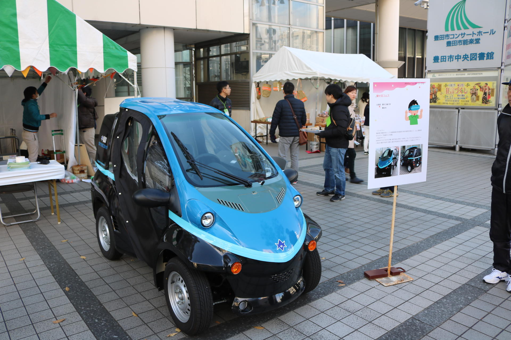
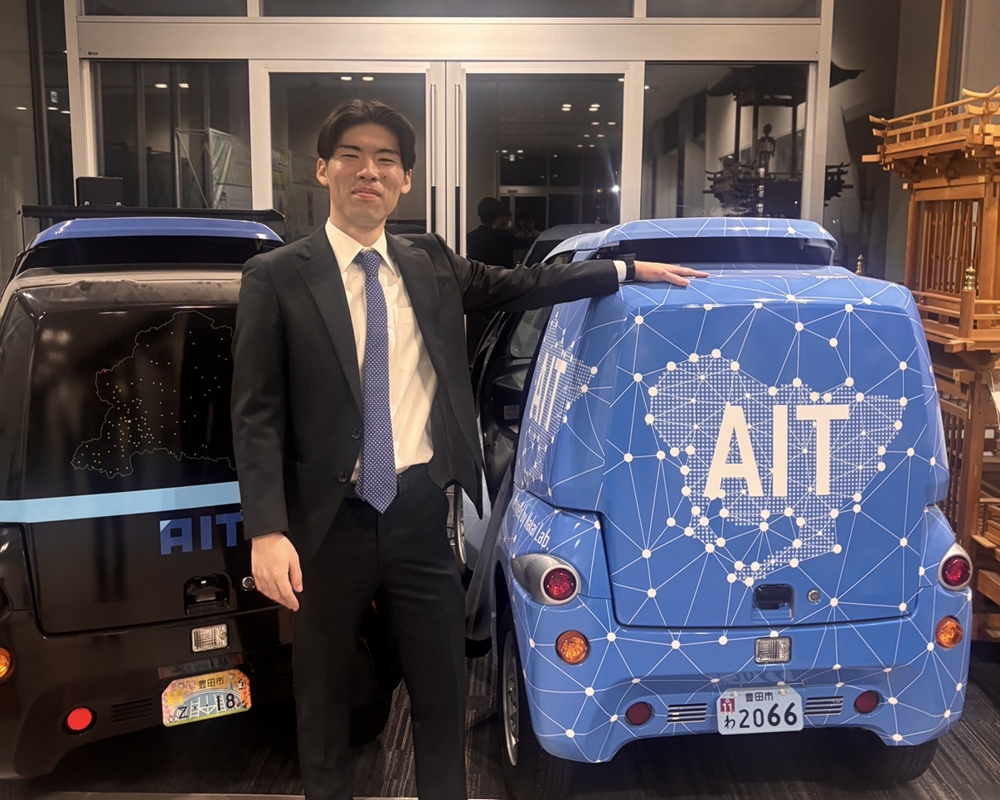
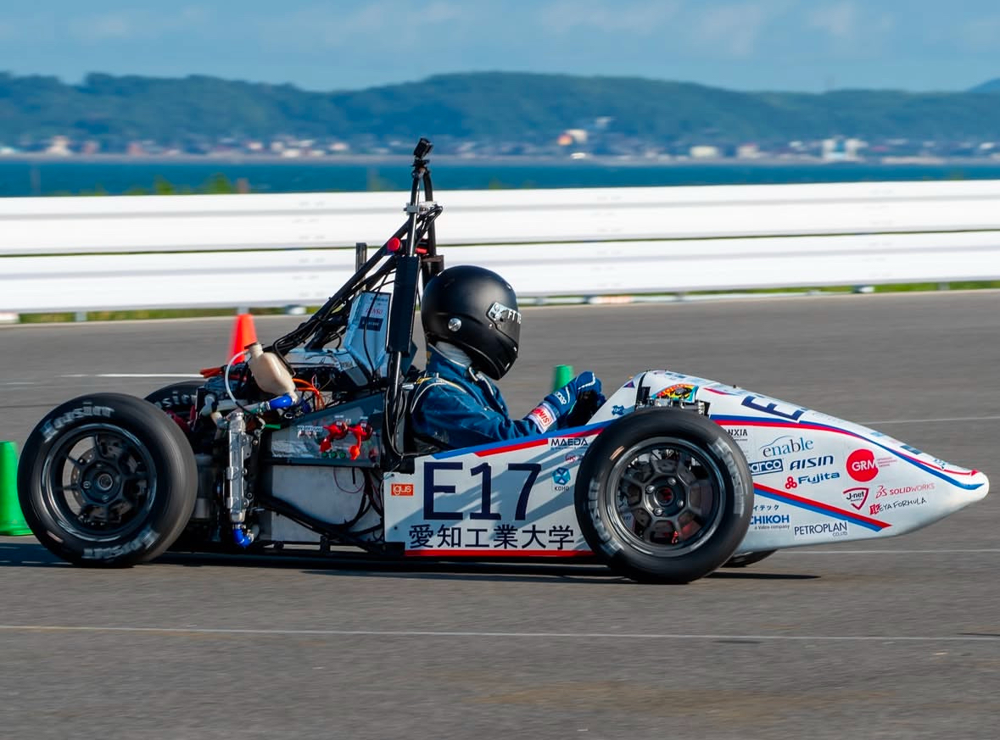
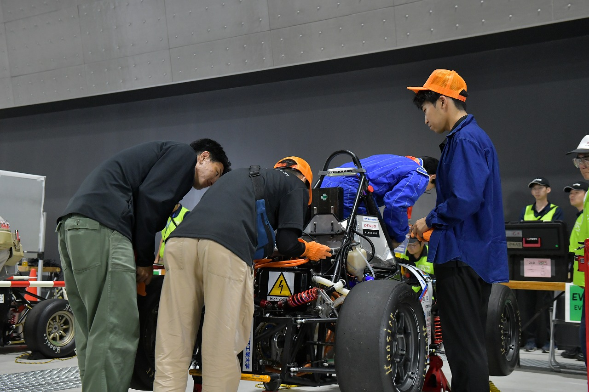
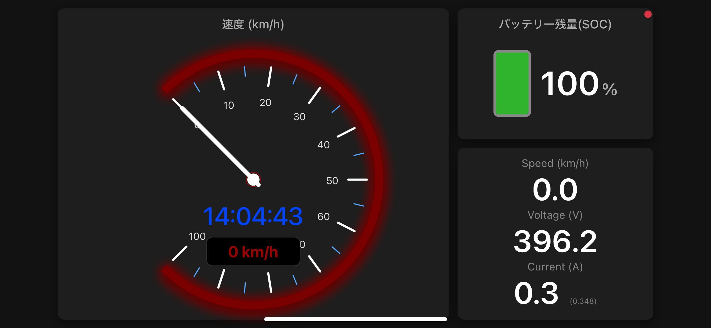
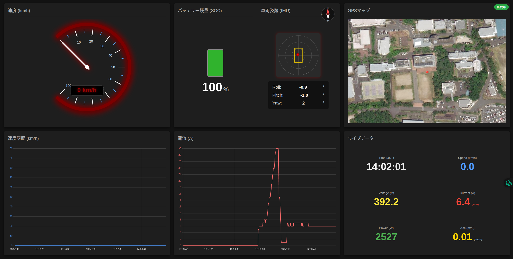

組み込み × 車両制御 × 画像処理を軸に開発を行う学生エンジニア。
学生フォーミュラEVの電気システム開発、複数魚眼カメラによる3次元映像研究、
ESP32とAWSを用いたリアルタイムテレメトリなど、
「実機を確実に動かす」開発を中心に活動しています。
本研究では、複数の魚眼カメラ映像を統合し、全周囲を三次元的に把握可能な映像生成手法を研究している。 完全自動運転や遠隔操縦を想定し、操縦者が車両周囲の状況を直感的に把握できる視覚提示の実現を目的とする。 魚眼カメラは単一カメラで広範囲を撮影できる一方、強い歪みやカメラ間の視差により、映像接続や距離認識が困難となる。
本研究では、魚眼レンズの内部パラメータを高精度に校正し、画素情報から実世界の方位角を正確に取得可能な基盤を構築した。 遠方背景については無限遠連結を用いることで、安定した360度パノラマ映像を生成する。 一方、近傍物体に対しては、カメラ間で生じる視差を距離情報として積極的に活用し、外部センサを用いずに距離推定を行う。 推定された距離情報はVR空間内に再投影され、立体的な映像提示を可能とする。


学生フォーミュラでは、EV車両の電気システムを中心に、 「実機を確実に走らせること」を最優先に取り組んできました。 単なる設計に留まらず、トラブル対応・実装・検証まで一貫して担当し、Vプロセスを意識しながら設計・開発を行っております。
「理論上は正しい」ではなく、 「現場で確実に動くか」を基準に判断する姿勢は、 その後の研究・ロボット開発・テレメトリシステム構築にも一貫して活きています。


見えないデータを武器に変え、レース戦略を革新する――
自作ハードウェアとAWSクラウドを融合させ、リアルタイム・レーシングテレメトリシステムを独自開発しました。 ESP32をコアとしたエッジデバイスから、走行中の車両より取得した 電圧・電流・GNSS・速度・9軸IMUといったデータを、エッジ処理を行いながらリアルタイムにAWSへ転送しています。
FreeRTOSによるマルチタスク制御により、センサデータ収集と通信処理を並列化し、高負荷環境下でもデータ欠損のない堅牢な通信を実現しました。 バックエンドにはLambda・DynamoDBを用いたサーバーレスアーキテクチャを採用し、WebSocketを介してWebフロントエンドへ即時配信しています。
さらに、送信された全データはクラウドストレージへ自動アーカイブされ、レース終了直後からMatlabやExcelによる走行後解析が可能です。 リアルタイム監視と解析を両立することで、次戦のセッティングへ即座にフィードバックできる「チームとマシンをリアルタイムでつなぐシステム」を実現しました。

